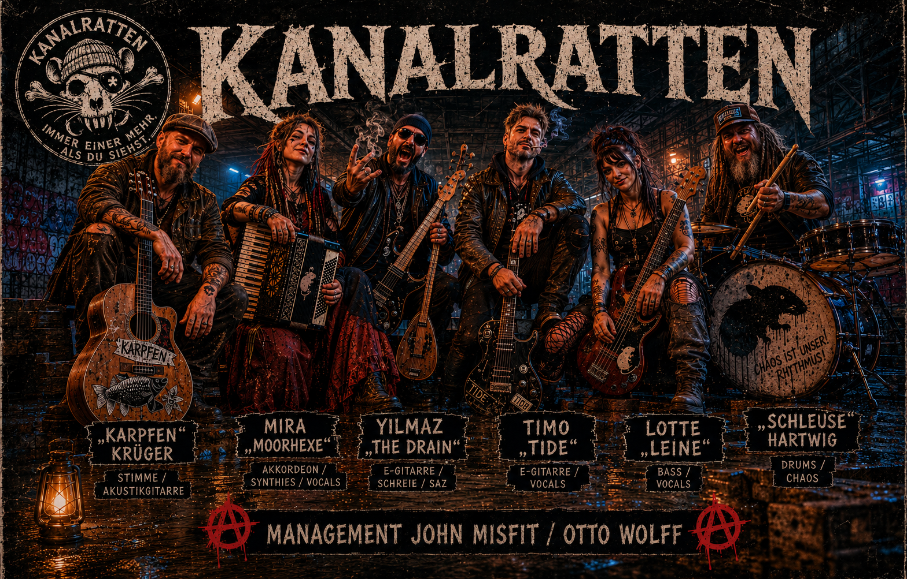

Brücke. Bier. Beton.
"Immer einer mehr, als du siehst."

Die Kanalratten sind eine Berliner Folk Metal und Kneipen Punk Band mit Einflüssen aus Sea Shanties, Pirate Metal und Berliner Straßenmusik. Ihre Songs erzählen Geschichten von Hausbooten, Schleusen, Spätis, Bier, Kanälen und den schrägen Gestalten entlang von Spree, Havel und Teltowkanal.
Rau, laut und immer mit einer ordentlichen Portion Berliner Schnauze.
Berlin - Treptow
20:00 Uhr
Berlin - Friedrichshain
19:00 Uhr
Berlin - Rummelsburger Bucht
18:00 Uhr
Berlin – Spree, Havel und Teltowkanal
Die Kanalratten sind zu Hause auf den Gewässern rund um Berlin.
Hier entstehen ihre Lieder, hier feiern sie mit ihren Fans, hier ist die Heimat.